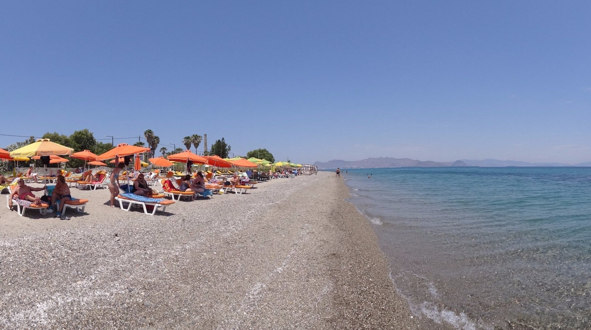
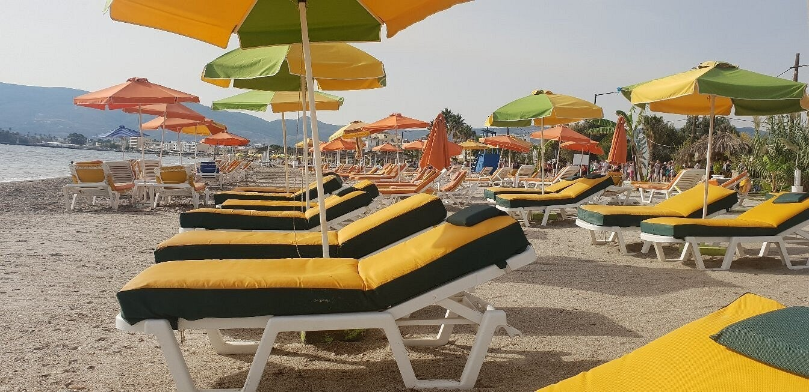

Kos-stad / Lambi
Lang strand
Over dit strand
Naast de haven in Kosstad begint het grote strand dat bestaat uit deels kiezels, deels zand. Waterschoenen zijn dus handig. Het strand loopt van net voorbij de haven tot enkele kilometers verderop.

Sfeer & ligging
Er is een overvloed aan muziek, bars en restaurants. Op het strand zijn volop ligbedden aanwezig, waar men over het algemeen gratis gebruik van mag maken als men een drankje nuttig.


